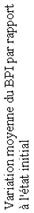

|

RÉSUMÉ DES CARACTÉRISTIQUES DU PRODUIT
ANSM - Mis à jour le : 26/12/2012
ACIDE ZOLEDRONIQUE AUTHOU 4 mg/5 ml, solution à diluer pour perfusion
2. COMPOSITION QUALITATIVE ET QUANTITATIVE
Acide zolédronique............................................................................................................................... 4 mg
Sous forme d’acide zolédronique trihydraté....................................................................................... 4,794 mg
Pour un flacon de 5 ml.
1 ml de solution à diluer contient 0,8 mg d’acide zolédronique.
Pour la liste complète des excipients, voir rubrique 6.1.
Solution à diluer pour perfusion.
Solution limpide et incolore.
pH = 6,0 à 6,5.
4.1. Indications thérapeutiques
· Prévention des complications osseuses (fractures pathologiques, compression médullaire, irradiation ou chirurgie osseuse, hypercalcémie induite par des tumeurs) chez des patients adultes atteints de pathologie maligne à un stade avancé avec atteinte osseuse.
· Traitement de l’hypercalcémie induite par des tumeurs (TIH) chez des patients adultes.
4.2. Posologie et mode d'administration
ACIDE ZOLEDRONIQUE AUTHOU doit être uniquement prescrit et administré aux patients par des professionnels de santé qui ont l’expérience de l’administration des bisphosphonates par voie intraveineuse.
Posologie
Prévention des complications osseuses chez des patients atteints de pathologie maligne à un stade avancé avec atteinte osseuse
Adulte et sujet âgé :
La dose recommandée dans la prévention des complications osseuses chez des patients atteints de pathologie maligne à un stade avancé avec atteinte osseuse est de 4 mg d’acide zolédronique toutes les 3 à 4 semaines.
Les patients devront aussi recevoir, par voie orale, un apport de 500 mg de calcium et de 400 UI de vitamine D par jour.
La décision de traiter les patients ayant des métastases osseuses afin de prévenir les complications osseuses devra être prise en tenant compte du fait que le délai d’action du traitement est de 2 à 3 mois.
Traitement de l’hypercalcémie induite par des tumeurs
Adulte et sujet âgé :
La dose recommandée dans l’hypercalcémie (calcémie corrigée en fonction de l’albumine ≥ 12,0 mg/dl ou 3,0 mmol/l) est une dose unique de 4 mg d’acide zolédronique.
Insuffisance rénale
TIH :
Le traitement par ACIDE ZOLEDRONIQUE AUTHOU des patients ayant une hypercalcémie induite par des tumeurs et présentant également une atteinte rénale sévère devra être envisagé uniquement après l’évaluation des risques et des bénéfices de ce traitement. Dans les études cliniques, les patients ayant une créatininémie > 400 μmol/l ou > 4,5 mg/dl ont été exclus. Aucune adaptation de la dose n’est nécessaire chez les patients présentant une hypercalcémie induite par des tumeurs avec une créatininémie < 400 μmol/l ou < 4,5 mg/dl (voir rubrique 4.4).
Prévention des complications osseuses chez des patients atteints de pathologie maligne à un stade avancé avec atteinte osseuse :
A l’initiation du traitement par ACIDE ZOLEDRONIQUE AUTHOU des patients avec un myelome multiple ou avec atteintes osseuses métastatiques secondaires à des tumeurs solides, la créatininémie et la clairance à la créatinine (CLcr) devront être évaluées. CLcr est calculée selon la formule de Cockcroft-Gault à partir de la créatininémie. ACIDE ZOLEDRONIQUE AUTHOU n’est pas recommandé chez des patients présentant une atteinte rénale sévère avant l’initiation du traitement, atteinte rénale qui est définie par une CLcr < 30 ml/min pour cette population. Dans les études cliniques menées avec l’acide zolédronique, les patients ayant une créatininémie > 265 μmol/l ou 3,0 mg/dl étaient exclus.
Chez les patients avec des métastases osseuses présentant une atteinte rénale légère à modérée avant l’initiation du traitement, atteinte rénale qui est définie par une CLcr de 30 à 60 ml/min, la dose recommandée d’ACIDE ZOLEDRONIQUE AUTHOU est la suivante (voir rubrique 4.4).
Clairance à la créatinine initiale (ml/min) Dose recommandée d’acide zolédronique AUTHOU*
|
· >60 4,0 mg d’acide zolédronique · 50-60 3,5 mg* d’acide zolédronique · 40-49 3,3 mg* d’acide zolédronique · 30-39 3,0 mg* d’acide zolédronique |
* Les doses ont été calculées en vue d’atteindre une valeur de l’ASC de 0,66 (mg•h/l) (pour une CLcr = 75 ml/min). L’objectif étant que chez les patients avec atteinte rénale, les doses réduites d’ACIDE ZOLEDRONIQUE AUTHOU permettent d’obtenir la même ASC que celle observée chez des patients avec une clairance à la créatinine de 75 ml/min.
Après l’initiation du traitement, la créatininémie devra être mesurée avant chaque administration d’ACIDE ZOLEDRONIQUE AUTHOU et le traitement devra être suspendu si la fonction rénale s’est détériorée. Dans les études cliniques l’altération de la fonction rénale était définie comme suit :
- Une augmentation de 0,5 mg/dl ou 44 μmol/l chez les patients qui avaient une valeur de la créatinine de base normale (< 1,4 mg/dl ou < 124 μmol/l).
- Une augmentation de 1,0 mg/dl ou 88 μmol/l chez les patients qui avaient une valeur de la créatinine de base anormale (> 1,4 mg/dl ou > 124 μmol/l).
Dans les études cliniques, le traitement par l’acide zolédronique était repris uniquement lorsque la valeur de la créatininémie était revenue à la valeur de base ± 10 % (voir rubrique 4.4). Le traitement par ACIDE ZOLEDRONIQUE AUTHOU devra être repris à la même dose que celle administrée avant l’interruption du traitement.
Population pédiatrique
La sécurité et l’efficacité de l’acide zolédronique chez les enfants âgés de 1 an à 17 ans n’ont pas été établies. Les données actuellement disponibles sont décrites à la rubrique 5.1 mais aucune recommandation sur la posologie ne peut être formulée.
Mode d’administration
Voie intraveineuse.
ACIDE ZOLEDRONIQUE AUTHOU 4 mg solution à diluer pour perfusion, ensuite dilué dans 100 ml (voir rubrique 6.6), doit être administré en une seule perfusion intraveineuse d’une durée d’au moins 15 minutes.
Chez les patients présentant une atteinte rénale légère à modérée, des doses réduites d’ACIDE ZOLEDRONIQUE AUTHOU sont recommandées (voir rubrique « Posologie » ci-dessus et section 6.3).
Instructions pour préparer les doses réduites d’ ACIDE ZOLEDRONIQUE AUTHOU
Prélever un volume approprié de la solution concentrée comme suit :
- 4,4 ml pour une dose de 3,5 mg
- 4,1 ml pour une dose de 3,3 mg
- 3,8 ml pour une dose de 3,0 mg
La quantité prélevée de la solution concentrée doit ensuite être diluée dans 100 ml de solution stérile de chlorure de sodium à 0,9 % m/v ou de solution de glucose à 5 % m/v. La dose doit être administrée en perfusion intraveineuse d’une durée d’au moins 15 minutes.
Acide Zolédronique AUTHOU, solution à diluer pour perfusion ne doit pas être mélangée avec des solutions contenant du calcium ou avec d’autres solutions pour perfusion contenant des cations divalents telle que la solution de Ringer lactate et doit être administrée de manière dissociée des autres perfusions via une ligne séparée.
Les patients doivent être correctement hydratés avant et après l’administration d’ACIDE ZOLEDRONIQUE AUTHOU.
· Hypersensibilité à la substance active, à d’autres bisphosphonates ou à l’un des excipients listés en rubrique 6.1.
· Allaitement (voir rubrique 4.6).
4.4. Mises en garde spéciales et précautions d'emploi
Les patients devront être évalués avant l’administration d’ACIDE ZOLEDRONIQUE AUTHOU pour s’assurer qu’ils sont correctement hydratés.
L’hyperhydratation doit être évitée chez les patients présentant un risque d’insuffisance cardiaque.
Les paramètres métaboliques standards associés à l’hypercalcémie, tels que la calcémie, la phosphatémie et la magnésémie, doivent être surveillés avec attention après initiation du traitement par ACIDE ZOLEDRONIQUE AUTHOU. En cas d’hypocalcémie, d’hypophosphatémie ou d’hypomagnésémie, un traitement de supplémentation de courte durée peut être nécessaire. Les patients ayant une hypercalcémie non traitée présentent généralement une atteinte de la fonction rénale ; il est donc recommandé de surveiller avec précaution la fonction rénale.
La substance active contenue dans ACIDE ZOLEDRONIQUE AUTHOU 4 mg/5 ml, solution à diluer pour perfusion est identique à celle des spécialités à base d’acide zolédronique 5 mg, solution pour perfusion. Les patients traités par ACIDE ZOLEDRONIQUE AUTHOU 4 mg/5 ml, solution à diluer pour perfusion ne doivent pas être traités par l’acide zolédronique 5 mg, solution pour perfusion ni aucun autre bisphosphonate de manière concomitante, étant donné que les effets de ces associations ne sont pas connus.
Insuffisance rénale
Les patients ayant une TIH et présentant une altération de la fonction rénale devront être évalués de façon appropriée pour apprécier le rapport bénéfice/risque du traitement avec ACIDE ZOLEDRONIQUE AUTHOU.
La décision de traiter les patients ayant des métastases osseuses afin de prévenir les complications osseuses devra être prise en tenant compte du fait que l’effet du traitement commence à s’observer au bout de 2 à 3 mois.
L’acide zolédronique a été associé à des cas de dysfonctionnements rénaux. Les facteurs qui peuvent augmenter le risque d’une altération de la fonction rénale comprennent la déshydratation, l’insuffisance rénale préexistante, les cycles multiples d’ACIDE ZOLEDRONIQUE AUTHOU et d’autres bisphosphonates, aussi bien que d’autres médicaments néphrotoxiques. Bien que le risque soit réduit en administrant sur 15 minutes la dose de 4 mg d’acide zolédronique, une altération de la fonction rénale peut cependant se produire. Une altération rénale, une progression de l’insuffisance rénale et le cas de dialyse ont été rapportés chez des patients après une dose initiale ou une seule dose de 4 mg d’acide zolédronique. Des augmentations de la créatininémie peuvent aussi s’observer, quoique moins fréquemment, chez quelques patients qui reçoivent ACIDE ZOLEDRONIQUE AUTHOU en administration chronique aux doses recommandées pour la prévention des complications osseuses.
Les patients devront avoir un dosage de leur créatininémie avant chaque administration d’ACIDE ZOLEDRONIQUE AUTHOU. En cas d’initiation de traitement chez des patients ayant des métastases osseuses et une atteinte rénale légère à modérée, des doses plus faibles d’acide zolédronique sont recommandées. En cas d’altération de la fonction rénale au cours du traitement, ACIDE ZOLEDRONIQUE AUTHOU devra être interrompu. ACIDE ZOLEDRONIQUE AUTHOU devra être repris uniquement lorsque la créatininémie est revenue à la valeur de base ± 10 %. Le traitement par ACIDE ZOLEDRONIQUE AUTHOU devra être repris à la même dose que celle administrée avant l’interruption du traitement.
En raison de l’effet potentiel de l’acide zolédronique sur la fonction rénale, du manque de données de tolérance clinique chez des patients ayant avant traitement une atteinte rénale sévère (définie dans les études cliniques, par une créatininémie ≥ 400 μmol/l ou ≥ 4,5 mg/dl chez des patients ayant une TIH et par une créatininémie ≥ 265 μmol/l ou ≥ 3,0 mg/dl chez des patients atteints de pathologie maligne avec atteinte osseuse) et compte tenu des données pharmacocinétiques encore limitées chez les patients ayant au départ une atteinte rénale sévère (clairance de la créatinine < 30 ml/min), l’utilisation d’ACIDE ZOLEDRONIQUE AUTHOU n’est pas recommandée chez des patients ayant une atteinte rénale sévère.
Insuffisance hépatique
Les données cliniques disponibles sont limitées chez les patients ayant une insuffisance hépatique sévère, aussi aucune recommandation spécifique ne peut être donnée pour cette population de patients.
Ostéonécrose de la mâchoire
Une ostéonécrose de la mâchoire a été rapportée chez des patients, principalement chez ceux atteint d’un cancer et traités par des médicaments qui inhibent la résorption osseuse, tel que ACIDE ZOLEDRONIQUE AUTHOU. La plupart de ces patients recevaient aussi une chimiothérapie et des corticoïdes. La majorité des cas rapportés ont été associés à des interventions dentaires telles que extraction dentaire. Plusieurs présentaient des signes d’infection localisée, y compris une ostéomyélite.
Un examen dentaire avec des soins dentaires préventifs appropriés devra être pris en considération avant l’instauration d’un traitement par bisphosphonates chez des patients présentant des facteurs de risque associés (par exemple : cancer, chimiothérapie, corticoïdes ou mauvaise hygiène buccale).
Au cours du traitement, ces patients devront éviter dans la mesure du possible toutes interventions dentaires invasives. Pour les patients qui développent une ostéonécrose de la mâchoire au cours d’un traitement par bisphosphonates, une chirurgie dentaire peut aggraver cette atteinte. Pour les patients nécessitant une intervention dentaire, il n’y a pas de donnée disponible suggérant que l’arrêt du traitement par bisphosphonates diminuerait le risque d’ostéonécrose de la mâchoire. L’appréciation clinique du médecin traitant devrait orienter la prise en charge de chaque patient en se basant sur l’évaluation individuelle du rapport bénéfice/risque.
Douleurs musculosquelettiques
Après mise sur le marché, des douleurs osseuses, articulaires et/ou musculaires sévères ou occasionnellement invalidantes ont été rapportées chez des patients traités par l’acide zolédronique. Toutefois de tels cas n’ont été rapportés que peu fréquemment. Le délai d’apparition des symptômes varie d’un jour à plusieurs mois après le début du traitement. Chez la majorité des patients ces symptômes ont régressé après l’arrêt du traitement. Une réapparition des symptômes a été observée chez certains patients après la reprise du traitement avec l’acide zolédronique ou avec un autre bisphosphonate.
Fractures atypiques du fémur
Des fractures fémorales atypiques sous-trochantériennes et diaphysaires ont été rapportées sous bisphosphonates, principalement chez des patients traités au long cours pour ostéoporose. Ces fractures transverses ou obliques courtes peuvent survenir sur n’importe quelle partie du fémur du dessous du petit trochanter jusqu’au dessus de la zone supracondylienne. Ces fractures surviennent après un traumatisme minime ou sans traumatisme, et certains patients présentent une douleur dans la cuisse ou l’aine, souvent associée à des signes radiologiques de fractures de stress, des semaines ou des mois avant la fracture fémorale. Les fractures sont souvent bilatérales ; par conséquent, le fémur controlatéral doit être examiné chez les patients traités par bisphosphonates ayant eu une fracture fémorale diaphysaire. Une mauvaise consolidation de ces fractures a été également rapportée. L’arrêt du traitement par bisphosphonates chez les patients chez lesquels une fracture fémorale atypique est suspectée, doit être envisagé en fonction de l’évaluation du bénéfice/risque pour le patient.
Durant le traitement par bisphosphonates, les patients doivent être informés que toute douleur au niveau de la cuisse, de la hanche ou de l’aine doit être rapportée et tous les patients présentant de tels symptômes devront être examinés pour rechercher une fracture fémorale atypique.
4.5. Interactions avec d'autres médicaments et autres formes d'interactions
Au cours des études cliniques, l’acide zolédronique a été administré de façon concomitante avec des agents anticancéreux classiques, des diurétiques, des antibiotiques et des analgésiques couramment utilisés sans survenue d’interactions cliniquement significatives. In vitro, l’acide zolédronique ne présente pas de liaison notable aux protéines plasmatiques et n’inhibe pas les enzymes du cytochrome P450 humaines (voir rubrique 5.2) mais aucune étude clinique d’interaction proprement dite n’a été menée.
La prudence est conseillée lorsque les bisphosphonates sont administrés avec des aminosides, puisque les deux substances peuvent avoir un effet additif, entraînant un taux plus faible de la calcémie sur des périodes plus longues que celles requises.
La prudence est requise lorsque ACIDE ZOLEDRONIQUE AUTHOU est administré avec d’autres médicaments potentiellement néphrotoxiques. Il faut aussi prêter attention à la survenue possible d’une hypomagnésémie pendant le traitement.
Chez les patients atteints de myélome multiple, le risque d’altération de la fonction rénale peut être augmenté lorsque ACIDE ZOLEDRONIQUE AUTHOU est utilisé en association avec la thalidomide.
Des cas d’ostéonécrose de la mâchoire ont été rapportés chez des patients traités de façon concomitante par l’acide zolédronique et des médicaments anti-angiogéniques.
Il n’existe pas de données suffisantes concernant l’utilisation de l’acide zolédronique chez la femme enceinte. Des études effectuées chez l’animal ont mis en évidence une toxicité sur la reproduction avec l’acide zolédronique (voir rubrique 5.3). Le risque potentiel en clinique n’est pas connu. ACIDE ZOLEDRONIQUE AUTHOU ne doit pas être utilisé pendant la grossesse.
Allaitement
Il n’est pas établi si l’acide zolédronique est excrété dans le lait maternel. ACIDE ZOLEDRONIQUE AUTHOU est contre-indiqué chez la femme qui allaite (voir rubrique 4.3).
Fécondité
Les potentiels effets délétères de l’acide zolédronique sur la fécondité des parents et de la génération F1 ont été évalués chez le rat. Il a été observé des effets pharmacologiques majorés considérés comme liés à l’inhibition du métabolisme du calcium osseux par le produit, résultant en une hypocalcémie péri-parturiente, un effet de classe des bisphosphonates, une dystocie et un arrêt anticipé de l’étude. Ainsi il n’a pas été possible d’éliminer un effet de l’acide zolédronique sur la fertilité chez l’homme.
4.7. Effets sur l'aptitude à conduire des véhicules et à utiliser des machines
Des effets indésirables tels que vertiges et somnolence peuvent avoir une influence sur l’aptitude à conduire des véhicules et à utiliser des machines. Par conséquent, la prudence est requise avec l’utilisation d’ACIDE ZOLEDRONIQUE AUTHOU et la conduite ou l’utilisation de machines.
Il a généralement été rapporté une phase de réaction aigue dans les trois jours suivants l’administration
d’acide zolédronique 4 mg/5 ml, solution à diluer pour perfusion avec des symptômes incluant douleur osseuse, fièvre, fatigue, arthralgies, myalgies et frissons ; ces symptômes se résolvent habituellement en quelques jours (voir la description des effets indésirables sélectionnés).
Les risques importants identifiés avec ACIDE ZOLEDRONIQUE AUTHOU dans les indications approuvées sont les suivants :
Atteinte de la fonction rénale, ostéonécrose de la mâchoire, phase de réaction aigue, hypocalcémie, effets indésirables oculaires, fibrillation auriculaire, anaphylaxie. La fréquence de chacun de ces risques identifiés est présentée dans le Tableau 1.
Tableau des effets indésirables
Les réactions indésirables suivantes, énumérées dans le Tableau 1, ont été collectées dans des études cliniques et les signalements d’effets indésirables après commercialisation, principalement après l’administration chronique du traitement par l’acide zolédronique 4 mg :
Tableau 1
Les réactions indésirables sont classées par ordre de fréquence décroissante en utilisant la convention suivante : très fréquente (≥1/10), fréquente (≥1/100, <1/10), peu fréquente (≥1/1.000, <1/100), rare (≥1/10.000, <1/1.000), très rare (<1/10.000), fréquence indéterminée (ne peut être estimée sur la base des données disponibles).
|
Affections hématologiques et du système lymphatique : |
||
|
|
Fréquent Peu fréquent Rare |
Anémie Thrombopénie, leucopénie Pancytopénie |
|
Affections du système immunitaire : |
||
|
|
Peu fréquent Rare |
Réaction d’hypersensibilité Œdème de Quincke (angioneurotique) |
|
Affections psychiatriques : |
||
|
|
Peu fréquent Rare |
Anxiété, troubles du sommeil Confusion |
|
Affections du système nerveux : |
||
|
|
Fréquent Peu fréquent
|
Céphalée Etourdissements, paresthésie, trouble du goût, hypoesthésie, hyperesthésie, tremblements, somnolence |
|
Affections oculaires : |
||
|
|
Fréquent Peu fréquent Très rare |
Conjonctivite Vision trouble, sclérite et inflammation orbitale Uvéite, épisclérite |
|
Affections cardiaques : |
||
|
|
Peu fréquent
Rare |
Hypertension, hypotension, fibrillation auriculaire, hypotension pouvant conduire à une syncope ou un collapsus circulatoire Bradycardie |
|
Affections respiratoires, thoraciques et médiastinales : |
||
|
|
Peu fréquent |
Dyspnée, toux, bronchoconstriction |
|
Affections gastro-intestinales : |
||
|
|
Fréquent Peu fréquent
|
Nausées, vomissements, anorexie Diarrhée, constipation, douleurs abdominales, dyspepsie, stomatite, bouche sèche |
|
Affections de la peau et du tissu sous–cutané : |
||
|
|
Peu fréquent |
Prurit, éruptions cutanées (y compris éruptions érythémateuses et maculaires), transpiration accrue |
|
Affections musculo-squelettiques et systémiques : |
||
|
|
Fréquent
Peu fréquent |
Douleurs osseuses, myalgie, arthralgie, douleur généralisée Crampes musculaires, ostéonécroses de la mâchoire* |
|
Affections du rein et des voies urinaires : |
||
|
|
Fréquent Peu fréquent |
Atteintes rénales Insuffisance rénale aiguë, hématurie, protéinurie |
|
Troubles généraux et anomalies au site d’administration : |
||
|
|
Fréquent
Peu fréquent |
Fièvre, syndrome pseudo-grippal (y compris fatigue, frissons, malaise et bouffée vasomotrice) Asthénie, œdème périphérique, réactions au site d’injection (y compris douleurs, irritation, tuméfaction, induration), douleur thoracique, prise de poids, choc anaphylactique, urticaire |
|
Investigations : |
||
|
|
Très fréquent Fréquent
Peu fréquent Rare |
Hypophosphatémie Augmentation de la créatinémie et de l’uricémie, hypocalcémie Hypomagnésémie, hypokaliémie Hyperkaliémie, hypernatrémie |
|
* Basé sur les essais cliniques avec revue des cas possibles d’ostéonécrose de la mâchoire. Etant donné que ces rapports sont sujets à des facteurs de confusion, il n’est pas possible d’établir de façon fiable une relation causale à l’exposition au médicament. |
||
|
|
|
|
Description des réactions indésirables sélectionnées
Atteintes de la fonction rénale
Des altérations de la fonction rénale ont été signalées sous acide zolédronique. Dans une analyse poolée des données de tolérance provenant des études d’enregistrement réalisées chez les patients ayant des tumeurs malignes d’origine osseuse à un stade avancé traités pour la prévention des évènements musculo squelettiques, la fréquence des cas d’insuffisance rénale suspectés d’être en rapport avec l’acide zolédronique 4 mg/5 ml, solution à diluer pour perfusion (effets indésirables) était la suivante : myélome multiple (3,2 %), cancer de la prostate (3,1 %), cancer du sein (4,3 %), tumeurs du poumon et autres tumeurs solides (3,2 %). Les facteurs pouvant accroître le risque de détérioration de la fonction rénale sont la déshydratation, les atteintes rénales préexistantes, la répétition des cycles d’acide zolédronique ou d’autres bisphosphonates, l’utilisation concomitante de médicaments néphrotoxiques et un temps de perfusion plus court que celui recommandé. L’altération de la fonction rénale, la progression d’une insuffisance rénale et la dialyse ont été rapportées chez des patients après la première dose ou une unique dose de 4 mg d’acide zolédronique (voir rubrique 4.4)
Ostéonécrose de la mâchoire
Des cas d’ostéonécroses (principalement de la mâchoire) ont été rapportés, principalement chez des patients atteints d’un cancer et traités par des médicaments qui inhibent la résorption osseuse, tel que ACIDE ZOLEDRONIQUE AUTHOU. Beaucoup de ces patients présentaient des signes d’infection locale y compris une ostéomyélite et la majorité des cas concernait des patients atteints d’un cancer et ayant subi une extraction dentaire ou d’autres chirurgies dentaires. L’ostéonécrose de la mâchoire présente de multiples facteurs de risque documentés incluant le diagnostic d’un cancer, les traitements associés (par exemple : chimiothérapie, radiothérapie, corticothérapie) et des affections associées (par exemple : anémie, troubles de la coagulation, infection, maladie buccale préexistante). Bien que la causalité n’a pas été établie, il est recommandé d’éviter une chirurgie dentaire dont la guérison pourrait être retardée (voir rubrique 4.4).
Fibrillation auriculaire
Au cours d’une étude de 3 ans, randomisée et contrôlée en double aveugle, qui a évalué l’efficacité et la tolérance de 5 mg d’acide zolédronique administré une fois par an versus placebo dans le traitement de l’ostéoporose post-ménopausique (OPM), l’incidence globale des fibrillations auriculaires a été de 2,5 % (96 sur 3 862) dans le bras acide zolédronique et de 1,9 % (75 sur 3 852) dans le bras placebo. Le taux de fibrillations auriculaires classées comme évènements indésirables graves a été de 1,3 % (51 sur 3 862) dans le bras acide zolédronique et 0,6 % (22 sur 3 852) dans le bras placebo. Le déséquilibre observé dans cette étude n’a pas été observé dans d’autres études avec l’acide zolédronique, y compris celles avec l’acide zolédronique 4 mg administré toutes les 3-4 semaines chez les patients traités en oncologie. Le mécanisme de l’augmentation de cette incidence des fibrillations auriculaires dans cette seule étude clinique n’est pas connu.
Réaction en phase aigue
Cet effet indésirable consiste en une constellation de symptômes qui incluent fièvre, myalgies, céphalées, douleurs des extrémités, nausées, vomissements, diarrhée et arthralgies. Le délai d’apparition de ces symptômes est ≤ 3 jours après perfusion d’ACIDE ZOLEDRONIQUE AUTHOU. L’ensemble de ces symptômes peut être présenté comme des symptômes « pseudo-grippaux » ou « post-dose ».
Fractures atypiques du fémur
Après la commercialisation, les effets indésirables suivants ont été rapportés (fréquence rare) : fractures fémorales atypiques sous-trochantériennes et diaphysaires (effets indésirables de classe des bisphosphonates).
L’expérience clinique d’un surdosage aigu d’ACIDE ZOLEDRONIQUE AUTHOU est limitée. L’administration par erreur de doses d’acide zolédronique allant jusqu’à 48 mg a été rapportée. Les patients qui ont reçu des doses supérieures à celles recommandées (voir rubrique 4.2) doivent être surveillés attentivement étant donné qu’une altération de la fonction rénale (y compris une insuffisance rénale) et des anomalies des électrolytes sériques (incluant le calcium, le phosphore et le magnésium) ont été observées. En présence d’une hypocalcémie, des perfusions de gluconate de calcium doivent être administrées en fonction de la nécessité clinique.
5. PROPRIETES PHARMACOLOGIQUES
5.1. Propriétés pharmacodynamiques
Classe pharmacothérapeutique : Médicaments pour le traitement de maladies osseuses, bisphosphonate, code ATC : M05BA08
L’acide zolédronique appartient à la classe des bisphosphonates et agit principalement sur l’os. Il inhibe la résorption ostéoclastique osseuse.
L’action sélective des bisphosphonates sur l’os découle de leur forte affinité pour l’os minéralisé mais le mécanisme moléculaire précis, menant à l’inhibition de l’activité ostéoclastique n’est pas encore élucidé. Dans les études à long terme menées chez l’animal, l’acide zolédronique inhibe la résorption osseuse sans effet défavorable sur la formation, la minéralisation ou les propriétés mécaniques de l’os.
En plus d’être un puissant inhibiteur de la résorption osseuse, l’acide zolédronique possède également plusieurs propriétés antitumorales qui pourraient contribuer à son efficacité globale dans le traitement de la maladie métastatique osseuse. Les propriétés suivantes ont été démontrées dans des études pré-cliniques :
- In vivo : inhibition de la résorption ostéoclastique osseuse qui altère le microenvironnement médullaire, le rendant moins favorable à la croissance des cellules tumorales, activité anti-angiogénique et activité antalgique
- In vitro : inhibition de la prolifération ostéoblastique, activité cytostatique directe et pro-apoptotique sur les cellules tumorales, effet cytostatique synergique en association à d’autres médicaments anti-cancéreux, activité anti-adhésion/invasion cellulaire.
Résultats des études cliniques dans la prévention des complications osseuses chez des patients atteints de pathologie maligne à un stade avancé avec atteinte osseuse :
La première étude randomisée, en double aveugle, contrôlée versus placebo comparait 4 mg d’acide zolédronique au placebo dans la prévention des complications osseuses (Skeletal Related Events : SREs) chez des patients présentant un cancer de la prostate. L’acide zolédronique 4 mg a réduit significativement la proportion de patients présentant au moins une complication osseuse (SRE), a retardé le délai médian de survenue de la première complication osseuse de plus de 5 mois et a réduit l’incidence annuelle de complications osseuses par patient (taux de morbidité osseuse). L’analyse des « événements multiples » a montré une réduction de 36 % du risque de développer des SREs dans le groupe acide zolédronique en comparaison avec le groupe placebo. Les patients ayant reçu 4 mg d’acide zolédronique ont rapporté moins d’augmentation de la douleur que ceux ayant reçu le placebo avec des différences significatives à 3, 9, 21 et 24 mois. Il y a eu moins de patients traités par l’acide zolédronique 4 mg qui ont souffert de fractures pathologiques. Les effets du traitement étaient moins prononcés chez les patients présentant des lésions blastiques. Les résultats d’efficacité sont rapportés dans le Tableau 2.
Dans une seconde étude comprenant des tumeurs solides autres que le cancer du sein ou le cancer de la prostate, l’acide zolédronique 4 mg a réduit significativement la proportion de patients avec au moins une SRE, a retardé le délai médian de survenue de la première complication osseuse de plus de 2 mois, et a réduit le taux de morbidité osseuse. L’analyse des « événements multiples » a montré une réduction de 30,7 % du risque de développer des SREs dans le groupe acide zolédronqiue 4 mg en comparaison avec le placebo. Les résultats d’efficacité sont rapportés dans le Tableau 2.
Tableau 2 : Résultats d’efficacité (Patients présentant un cancer de la prostate et recevant une hormonothérapie)
|
|
Toute complication osseuse (TIH incluse) |
Fractures* |
Radiothérapie osseuse |
|||
|
|
Acide Zolédronique 4 mg |
Placebo |
Acide Zolédronique 4 mg |
Placebo |
Acide Zolédronique 4 mg |
Placebo |
|
N |
214 |
208 |
214 |
208 |
214 |
208 |
|
Proportion de patients avec complications osseuses (%) |
38 |
49 |
17 |
25 |
26 |
33 |
|
Valeur p |
0,028 |
0,052 |
0,119 |
|||
|
Médiane de survenue de la 1ère complication osseuse (jours) |
488 |
321 |
NA |
NA |
NA |
640 |
|
Valeur p |
0,009 |
0,020 |
0,055 |
|||
|
Taux de morbidité osseuse |
0,77 |
1,47 |
0,20 |
0,45 |
0,42 |
0,89 |
|
Valeur p |
0,005 |
0,023 |
0,060 |
|||
|
Réduction du risque de développer des complications osseuses (analyse des « événements multiples » )** (%)
|
36 % |
|
NApp |
NApp |
NApp |
NApp |
|
Valeur p |
0,002 |
NApp |
NApp |
|||
* Incluant les fractures vertébrales et non-vertébrales
** Prend en compte toutes les complications osseuses, aussi bien le nombre total que la durée entre chaque complication au cours de l’étude
NA = Non Atteint
NApp = Non Applicable
Tableau 3 : Résultats d’efficacité (Patients présentant des tumeurs solides autres que cancer du sein ou cancer de la prostate)
|
|
Toute complication osseuse (TIH incluse) |
Fractures* |
Radiothérapie osseuse |
|||
|
|
Acide Zolédronique 4 mg |
Placebo |
Acide Zolédronique 4 mg |
Placebo |
Acide Zolédronique 4 mg |
Placebo |
|
N |
257 |
250 |
257 |
250 |
257 |
250 |
|
Proportion de patients avec complications osseuses (%) |
39 |
48 |
16 |
22 |
29 |
34 |
|
Valeur p |
0,039 |
0,064 |
0,173 |
|||
|
Médiane de survenue de la 1ère complication osseuse (jours) |
236 |
155 |
NA |
NA |
424 |
307 |
|
Valeur p |
0,009 |
0,020 |
0,079 |
|||
|
Taux de morbidité osseuse |
1,74 |
2,71 |
0,39 |
0,63 |
1,24 |
1,89 |
|
Valeur p |
0,012 |
0,066 |
0,099 |
|||
|
Réduction du risque de développer des complications osseuses (analyse des « événements multiples » )** (%)
|
30,7 |
|
NApp |
NApp |
NApp |
NApp |
|
Valeur p |
0,003 |
NApp |
NApp |
|||
* Incluant les fractures vertébrales et non-vertébrales ** Prend en compte toutes les complications osseuses, aussi bien le nombre total que la durée entre chaque complication au cours de l’étude
NA = Non Atteint
NApp = Non Applicable
Dans une troisième étude de phase III, randomisée, en double aveugle, l’acide zolédronique 4 mg a été comparé à 90 mg de pamidronate administrés toutes les 3 à 4 semaines chez des patients ayant un myélome multiple ou un cancer du sein avec au moins une complication osseuse. Les résultats ont démontré que l’acide zolédronique 4 mg avait une efficacité comparable à 90 mg de pamidronate dans la prévention des complications osseuses. L’analyse des « événements multiples » a montré une réduction significative de 16 % du risque de développer des complications osseuses chez les patients traités par l’acide zolédronique 4 mg en comparaison avec ceux traités par le pamidronate. Les résultats d’efficacité sont rapportés dans le Tableau 4.
Tableau 4 : Résultats d’efficacité (patients présentant un cancer du sein ou un myélome multiple)
|
|
Toute complication osseuse (TIH incluse) |
Fractures* |
Radiothérapie osseuse |
|||
|
|
Acide Zolédronique 4 mg |
Pam 90 mg |
Acide Zolédronique 4 mg |
Pam 90 mg |
Acide Zolédronique 4 mg |
Pam 90 mg |
|
N |
561 |
555 |
561 |
555 |
561 |
555 |
|
Proportion de patients avec complications osseuses (%) |
48 |
52 |
37 |
39 |
19 |
24 |
|
Valeur p |
0,198 |
0,653 |
0,037 |
|||
|
Médiane de survenue de la 1ère complication osseuse (jours) |
376 |
356 |
NA |
714 |
NA |
NA |
|
Valeur p |
0,151 |
0,672 |
0,026 |
|||
|
Taux de morbidité osseuse |
1,04 |
1,39 |
0,53 |
0,60 |
0,47 |
0,71 |
|
Valeur p |
0,084 |
0,614 |
0,015 |
|||
|
Réduction du risque de développer des complications osseuses (analyse des « événements multiples » )** (%)
|
16 |
- |
NApp |
NApp |
NApp |
NApp |
|
Valeur p |
0,030 |
NApp |
NApp |
|||
* Incluant les fractures vertébrales et non-vertébrales
** Prend en compte toutes les complications osseuses, aussi bien le nombre total que la durée entre chaque complication au cours de l’étude
NA = Non Atteinte
NApp = Non Applicable
L’acide zolédronique 4 mg a aussi été étudié dans une étude randomisée, en double aveugle, controlée versus placebo, chez 228 patients avec métastases osseuses documentées provenant d’un cancer du sein, pour évaluer l’effet de l’acide zolédronique 4 mg sur l’incidence des complications osseuses (Skeletal Related Events : SREs) (déterminée comme le rapport du nombre total de SREs (excluant l’hypercalcémie et ajusté en fonction des fractures antérieures), sur le temps d’exposition au risque. Les patients recevaient 4 mg d’acide zolédronique ou du placebo toutes les 4 semaines pendant une année. La répartition des patients entre le groupe traité par l’acide zolédronique et le groupe placebo était homogène.
L’incidence des SREs (complication/année-patient) était de 0,628 pour l’acide zolédronique et 1,096 pour le placebo. La proportion de patients avec au moins une SRE (excluant l’hypercalcémie) était de 29,8 % dans le groupe traité par l’acide zolédronique versus 49,6 % pour le groupe placebo (p=0,003). Le temps médian d’apparition de la première SRE n’était pas encore atteint dans le groupe acide zolédronique à la fin de l’étude et était significativement prolongé par comparaison au placebo (p= 0,007). Dans une analyse d’événements multiples, l’acide zolédronique 4 mg a réduit le risque de SREs de 41 % par comparaison au placebo (risque relatif = 0,59, p=0,019).
Dans le groupe acide zolédronique, une amélioration statistiquement significative du score de douleur (utilisation de la « Brief Pain Inventory » (BPI)) a été observée à 4 semaines et à tous les moments ultérieurs de l’étude, en comparaison au placebo (figure 1). Le score de douleur avec l’acide zolédronique était constamment inférieur à celui observé à l’état initial et il était accompagné d’une tendance à la réduction du score d’analgésie.
Figure 1 : Variations moyennes du score de douleur BPI par rapport à l’état initial. Pour la comparaison des traitements (4 mg d’acide zolédronique versus placebo) les différences statistiquement significatives sont annotées d’un astérisque (*p<0,05)
 Durée de l’étude (semaine)
Résultats des études cliniques dans le traitement des hypercalcémies induites par les tumeurs (TIH)
Les études cliniques dans l’hypercalcémie induite par des tumeurs (TIH) ont démontré que l’effet de l’acide zolédronique est caractérisé par une baisse de la calcémie et de l’excrétion urinaire de calcium. Dans les études phase I de recherche de doses, chez des patients présentant une hypercalcémie légère à modérée secondaire à des tumeurs (TIH), les doses efficaces testées ont été approximativement de 1,2 à 2,5 mg.
Pour évaluer les effets de l’acide zolédronique 4 mg par rapport à 90 mg de pamidronate, les résultats de deux études pivots multicentriques chez des patients ayant une TIH ont été combinés dans une analyse préalablement programmée. Il a été observé une normalisation de la calcémie corrigée plus rapide au 4ème jour avec 8 mg d’acide zolédronique et au 7ème jour avec 4 mg et 8 mg d’acide zolédronique. Les taux de réponse suivants ont été observés :
Tableau 5 : Pourcentage de patients ayant une réponse complète par jour dans les études TIH combinées :
|
|
4ème jour |
7ème jour |
10ème jour |
|
Acide Zolédronique 4 mg (n=86) |
45,3% (p=0,104) |
82,6% (p=0,005)* |
88,4% (p=0,002)* |
|
Acide Zolédronique 8 mg (n=90) |
55,6% (p=0,021)* |
83,3% (p=0,010)* |
86,7% (p=0,015)* |
|
Pamidronate 90 mg (n=99) |
33,3% |
63,6% |
69,7% |
|
*valeurs p comparés au pamidronate |
|||
Le délai médian de normalisation de la calcémie a été de 4 jours. Le délai médian avant la rechute (réaugmentation de la calcémie corrigée en fonction de l’albumine ≥ à 2,9 mmol/l) a été de 30 à 40 jours pour les patients traités par l’acide zolédronique versus 17 jours pour ceux traités par 90 mg de pamidronate (p = 0,001 pour 4 mg et p = 0,007 pour 8 mg). Il n’y a pas de différence statistiquement significative entre les deux doses d’acide zolédronique.
Dans les études cliniques, 69 patients qui ont rechuté ou qui étaient réfractaires au traitement initial (acide zolédronique 4 mg, 8 mg ou pamidronate 90 mg) ont été traités une seconde fois avec 8 mg d’acide zolédronique. Le taux de réponse chez ces patients était environ de 52 %. Puisque ces patients ont été traités de nouveau uniquement par 8 mg d’acide zolédronique, il n’y a pas de données disponibles qui permettent de comparer avec la dose de 4 mg.
Dans les études cliniques réalisées chez des patients avec hypercalcémie induite par des tumeurs, le profil global de tolérance dans les trois groupes de traitement (acide zolédronique 4 mg et 8 mg et pamidronate 90 mg) était similaire en nature et en sévérité.
Enfants
Résultats des études cliniques dans le traitement de l’osteogénèse imparfaite sévère chez les enfants âgés de 1 à 17 ans
Les effets de l’acide zolédronique administré par voie intraveineuse chez l’enfant (âgé de 1 à 17 ans) atteint d’ostéogénèse imparfaite sévère (types I, III, et IV) ont été comparés avec le pamidronate administré par voie intraveineuse dans une étude internationale, multicentrique, randomisée et en ouvert avec respectivement 74 et 76 patients dans chaque groupe de traitement. La durée du traitement était de 12 mois précédée d’une période de sélection de 4 à 9 semaines pendant laquelle une supplémentation en vitamine D et en calcium a été administrée pendant au moins 2 semaines. Dans le programme clinique, les patients âgés de 1 à 3 ans recevaient 0,025 mg/kg d’acide zolédronique (jusqu’à une dose unique maximale de 0,35 mg) tous les 3 mois et les patients âgés de 3 à 17 ans recevaient 0,05 mg/kg d’acide zoledronique (jusqu’à une dose unique maximale de 0,83 mg) tous les 3 mois. Une étude d’extension a été menée afin d’examiner la tolérance générale et rénale à long terme de l’acide zolédronique une ou deux fois par an sur une période d’extension de 12 mois de traitement chez les enfants ayant reçu un an de traitement soit par l’acide zolédronique soit par le pamidronate dans l’étude principale.
L’objectif principal de l’étude était le pourcentage de changement de la Densité Minérale Osseuse (DMO) au col fémoral après 12 mois de traitement. Les effets estimés des traitements sur la DMO étaient similaires mais le design de l’essai n’était pas suffisamment robuste pour établir la non infériorité d’efficacité de l’acide zolédronique. En particulier, il n’était pas clairement démontré l’efficacité sur des fractures ou sur la douleur. Des fractures des os longs des extrémités inférieurs ont été rapportés chez approximativement 24 % (fémur) et 14 % (tibia) des patients traités par l’acide zolédronique contre 12 % et 5 % des patients traités par le pamidronate atteints d’ostéogenèse imparfaite sévère, sans tenir compte du type de maladie et de la causalité mais l’incidence moyenne des fractures était comparable chez les patients traités par l’acide zolédronique et chez ceux traités par le pamidronate : 43 % (32/74) contre 41 % (31/76). L’interprétation du risque de fracture est compromis par le fait que les fractures sont des événements indésirables fréquents chez les patients atteints d’ostéogenèse imparfaite sévère, du fait de la maladie.
Le type d’événements indésirables observés dans cette population était généralement similaire avec ceux précédemment observés chez les adultes ayant un cancer des os avancé (voir rubrique 4.8). Les réactions indésirables présentées dans le Tableau 6, sont classées par ordre de fréquence décroissante en utilisant la convention suivante : très fréquente (≥1/10), fréquente (≥1/100, <1/10), peu fréquente (≥1/1.000, <1/100), rare (≥1/10.000, <1/1.000), très rare (<1/10.000), fréquence indéterminée (ne peut être estimée sur la base des données disponibles).
Tableau 6 : Réactions indésirables1 observées chez l’enfant atteint d’ostéogenèse imparfaite sévère.
|
Affections du système nerveux : |
||
|
|
Fréquent |
Céphalée |
|
Affections cardiaques : |
||
|
|
Fréquent |
Tachycardie |
|
Affections respiratoires, thoraciques et médiastinales : |
||
|
|
Fréquent |
Rhino-pharyngite |
|
Affections gastro-intestinales : |
||
|
|
Très fréquent Fréquent |
Nausées, vomissements Douleurs abdominales |
|
Affections musculo-squelettiques et systémiques : |
||
|
|
Fréquent
|
Douleurs des extrémités, arthralgies, douleurs musculo-squelettiques |
|
Troubles généraux et anomalies au site d’administration : |
||
|
|
Très fréquent Fréquent |
Fièvre, fatigue Réaction aiguë, douleurs |
|
Investigations : |
||
|
|
Très fréquent Fréquent |
Hypocalcémie Hypophosphatémie |
1 Les réactions indésirables apparaissant avec des fréquences < 5 % ont été médicalement évaluées et il a été montré que ces cas sont en accord avec le profil de sécurité d’emploi bien établi de l’acide zolédronique (voir rubrique 4.8).
Chez l’enfant atteint d’ostéogenèse imparfaite sévère, l’acide zolédronique semble être associé à des risques plus prononcés de réaction aiguë, d’hypocalcémie ou de tachycardie inexpliquée, en comparaison au pamidronate, mais cette différence diminue après plusieurs perfusions.
L’Agence Européenne du Médicament a accordé une dérogation à l’obligation de soumettre les résultats d’études réalisées avec l’acide zolédronique dans tous les sous-groupes de la population pédiatrique dans le traitement de l’hypercalcémie induite par des tumeurs et dans la prévention des complications osseuses chez des patients atteints de pathologie maligne à un stade avancé avec atteinte osseuse (voir rubrique 4.2 pour les information concernant l’usage pédiatrique).
5.2. Propriétés pharmacocinétiques
Des perfusions uniques et multiples de 5 et 15 minutes de 2, 4, 8 et 16 mg d’acide zolédronique chez 64 patients ayant des métastases osseuses ont fourni les données pharmacocinétiques suivantes, qui sont dose-indépendantes.
Après le début de la perfusion d’acide zolédronique, les concentrations plasmatiques de l’acide zolédronique ont augmenté rapidement pour atteindre leurs pics à la fin de la perfusion et pour ensuite diminuer rapidement à moins de 10 % du pic après 4 heures et à moins de 1 % du pic après 24 heures, avec une période prolongée ultérieure de concentration très basse, ne dépassant pas 0,1 % du pic avant la seconde perfusion d’acide zolédronique au jour 28.
L’acide zolédronique, administré par voie intraveineuse a une élimination triphasique : une disparition rapide biphasique de la circulation sanguine, avec des demi-vies de t½α 0,24 et t½β 1,87 heure, suivie par une longue phase d’élimination avec une demi-vie d’élimination terminale de t½γ 146 heures. Il n’y a pas d’accumulation plasmatique d’acide zolédronique après administration de doses multiples tous les 28 jours. L’acide zolédronique n’est pas métabolisé et est excrété sous forme inchangée par voie rénale. Au-delà des 24 premières heures, 39 ± 16 % de la dose administrée sont retrouvés dans les urines, alors que la quantité restante est principalement liée au tissu osseux. A partir du tissu osseux, il est libéré très lentement dans la circulation systémique et éliminé par voie rénale. La clairance corporelle totale est de 5,04 ± 2,5 l/h, est indépendante de la dose et non affectée par le sexe, l’âge, la race et le poids corporel. L’augmentation de la durée de perfusion de 5 à 15 minutes a entraîné une réduction de 30 % de la concentration de l’acide zolédronique en fin de perfusion mais n’a pas modifié l’aire sous la courbe de la concentration plasmatique par rapport au temps.
Comme cela est observé avec les autres bisphosphonates, la variabilité entre les patients des paramètres pharmacocinétiques de l’acide zolédronique est élevée.
Aucune donnée pharmacocinétique concernant l’acide zolédronique n’est disponible chez les patients ayant une hypercalcémie ou chez les patients atteints d’une insuffisance hépatique. In vitro, l’acide zolédronique n’inhibe pas les isoenzymes humaines du cytochrome P450, il ne subit pas de biotransformation, et dans les études animales, moins de 3 % de la dose administrée sont retrouvés dans les fèces, suggérant l’absence de rôle significatif de la fonction hépatique dans la pharmacocinétique de l’acide zolédronique.
La clairance rénale de l’acide zolédronique était corrélée à la clairance de la créatinine, la clairance rénale représentant 75 ± 33 % de la clairance de la créatinine, qui atteint une moyenne de 84 ± 29 ml/min (extrêmes : 22 et 143 ml/min) chez 64 patients atteints d’un cancer. L’analyse de la population a montré que pour les patients ayant une clairance de la créatinine de 20 ml/min (insuffisance rénale sévère) ou de 50 ml/min (insuffisance rénale modérée), la clairance prédictive correspondante de l’acide zolédronique devrait être respectivement de 37 % ou de 72 %, de celle d’un patient ayant une clairance de la créatinine de 84 ml/min. Des données pharmacocinétiques encore limitées sont disponibles uniquement chez des patients avec une insuffisance rénale sévère (clairance de la créatinine <30 ml/min).
L’acide zolédronique ne possède pas d’affinité pour les composants cellulaires sanguins et la liaison aux protéines plasmatiques est faible (approximativement 56 %) et indépendante de la concentration de l’acide zolédronique.
Populations particulières
Enfants
Les données limitées de pharmacocinétique chez l’enfant atteint d’osteogénèse imparfaite sévère suggèrent que la pharmacocinétique de l’acide zolédronique chez l’enfant âgé de 3 à 17 ans est identique à celle de l’adulte à des taux similaires en mg/kg. L’âge, le poids, le sexe et la clairance de la créatinine semblent ne pas avoir d’effet sur l’exposition à l’acide zolédronique.
5.3. Données de sécurité préclinique
La dose non létale la plus élevée en administration intraveineuse unique était de 10 mg/kg de poids corporel chez la souris et de 0,6 mg/kg chez le rat.
Toxicité subchronique et chronique
L’acide zolédronique a été bien toléré lorsqu’il a été administré par voie sous-cutanée chez le rat et par voie intraveineuse chez le chien, à des doses allant jusqu’à 0,02 mg/kg/j pendant 4 semaines. L’administration de 0,001 mg/kg/j par voie sous-cutanée chez le rat et de 0,005 mg/kg une fois tous les 2 à 3 jours par voie intraveineuse chez le chien sur une période allant jusqu’à 52 semaines a été également bien tolérée.
Le résultat le plus fréquent dans les études à doses répétées est une augmentation de la spongiose primaire dans les métaphyses des os longs chez les animaux en cours de croissance à presque toutes les doses, un résultat qui reflète l’activité pharmacologique du produit sur la résorption osseuse.
Les marges de sécurité relatives aux effets rénaux étaient étroites dans les études animales d’administration répétée par voie parentérale et à long terme, mais les taux cumulés sans effets indésirables observés (NOAEL) à dose unique (1,6 mg/kg) et à doses répétées jusqu’à un mois (0,06-0,6 mg/kg/j) n’ont pas montré d’effets rénaux à des doses équivalentes ou excédant la plus forte dose thérapeutique envisagée chez l’homme.
L’administration répétée à plus long terme de doses d’acide zolédronique voisines de la plus forte dose thérapeutique envisageable chez l’homme, a produit des effets toxiques sur d’autres organes incluant le tractus gastrointestinal, le foie, la rate, les poumons, et au niveau du site d’injection IV.
Toxicité sur la reproduction
L’acide zolédronique a présenté un effet tératogène chez le rat à des doses sous-cutanées ≥ 0,2 mg/kg. Bien qu’aucun effet tératogène ou foetotoxique n’ait été observé chez le lapin, une toxicité maternelle a été mise en évidence.
Mutagénicité et pouvoir carcinogène
L’acide zolédronique ne s’est pas révélé mutagène au cours des tests de mutagénicité, et les études de carcinogénicité n’ont pas mis en évidence de pouvoir carcinogène. Une dystocie a été observée chez le rat à la plus faible dose testée (0,01 mg/kg de poids corporel).
Mannitol, citrate trisodique dihydraté, eau pour préparations injectables.
Ce médicament ne doit pas être mélangé avec d’autres médicaments à l’exception de ceux mentionnés dans la rubrique 6.6.
Ce médicament ne doit pas être mélangé avec des solutions contenant du calcium ou avec d’autres solutions pour perfusion contenant des cations divalents telle que la solution de Ringer lactate et doit être administrée par voie de perfusion séparée en solution intraveineuse unique.
1 an.
Après dilution : Dans une solution de chlorure de sodium à 0,9 % ou de glucose à 5 %, la stabilité physico-chimique de la solution diluée a été démontrée pendant 24 heures à 25°C et entre 2° et 8° C. Toutefois, du point de vue microbiologique, le produit doit être utilisé immédiatement.
La solution réfrigérée doit ensuite revenir à température ambiante avant l’administration.
6.4. Précautions particulières de conservation
Pas de conditions particulières de conservation.
Pour les conditions de conservation du médicament après dilution, voir rubrique 6.3.
6.5. Nature et contenu de l'emballage extérieur
Flacon de 5 ml (copolymères cycloléfines) muni d’un bouchon en caoutchouc (bromobutyl) avec une bague en aluminium et une capsule flipp-off en polypropylène.
1, 4 ou 10 flacons de 5 ml.
Toutes les présentations peuvent ne pas être commercialisées.
6.6. Précautions particulières d’élimination et de manipulation
Avant l’administration, les 5 ml de la solution à diluer ou le volume prélevé nécessaire de la solution à diluer doivent être dilués avec 100 ml de solution de perfusion exempte de calcium (solution de chlorure de sodium à 0,9 % m/v ou solution de glucose à 5 % m/v).
Des informations supplémentaires sur la manipulation d’ACIDE ZOLEDRONIQUE AUTHOU, incluant la préparation des réductions de doses, sont fournies en rubrique 4.2.
La préparation doit se faire dans des conditions aseptiques. Réservé à un usage unique.
Seule une solution sans particule et sans coloration doit être utilisée.
Il est rappelé aux professionnels de santé que tout produit non utilisé ne doit pas être jeté au tout-à-l’égout.
Tout produit non utilisé ou déchet doit être éliminé conformément à la réglementation en vigueur.
7. TITULAIRE DE L’AUTORISATION DE MISE SUR LE MARCHE
medipha sante
19 avenue de norvege
les fjords – villebon sur yvette
91953 courtaboeuf cedex
8. NUMERO(S) D’AUTORISATION DE MISE SUR LE MARCHE
· 268 343-4 ou 34009 268 343 4 0 : 5 ml en flacon (copolymères cycloléfines); boîte de 1.
· 268 344-0 ou 34009 268 344 0 1 : 5 ml en flacon (copolymères cycloléfines); boîte de 4.
· 268 345-7 ou 34009 268 345 7 9 : 5 ml en flacon (copolymères cycloléfines); boîte de 10.
9. DATE DE PREMIERE AUTORISATION/DE RENOUVELLEMENT DE L’AUTORISATION
[à compléter par le titulaire]
10. DATE DE MISE A JOUR DU TEXTE
[à compléter par le titulaire]
Sans objet.
12. INSTRUCTIONS POUR LA PREPARATION DES RADIOPHARMACEUTIQUES
Sans objet.
Liste I.
Médicament soumis à prescription médicale. Médicament nécessitant une surveillance particulière pendant le traitement.